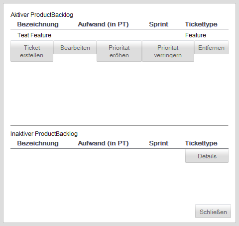

Product Backlog bearbeiten
Die daraufhin erscheinende Oberfläche zeigt zum einen das aktive und zum anderen das inaktive Product Backlog. Das inaktive Product Backlog enthält dabei alle Product-Backlog-Items, welche sich in einem Endzustand befinden.

Über die Buttons, die sich unter dem aktiven Product Backlog befinden, können neue Product-Backlog-Items erstellt, bearbeitet, gelöscht sowie deren Priorität verändert werdenwerden.
Über den Button "Details", welcher sich unter dem inaktiven Product Backlog befindet, können Details zu inaktiven Product-Backlog-Items eingesehen werden.
Die Priorität von Product-Backlog-Items kann verändert werden. Dafür stehen die Buttons "Priorität erhöhen" und "Priorität verringern" zur Verfügung.
Die Priorität wird durch die Reihenfolge in der Tabelle dargestellt. Ein Product-Backlog-Item, welches an einer höheren Position in der Tabelle angezeigt wird, besitzt eine höhere Priorität
Priorität erhöhen
Um die Priorität eines Product-Backlog-Item zu erhöhen muss dieses zunächst mit einem Klick in die Tabellenzeile ausgewählt werden. Ein weiterer Klick auf den Button "Priorität erhöhen" erhöht die Priorität des Product-Backlog-Items um eine Stufe, so dass die Positionen des ausgewählten Product-Backlog-Items und des Product-Backlog-Items über dem ausgewählten Product-Backlog-Item getauscht werden.
Priorität verringern
Um die Priorität eines Product-Backlog-Items zu verringern muss dieses zunächst mit einem Klick in die Tabellenzeile ausgewählt werden. Ein weiterer Klick auf den Button "Priorität verringern" erniedrigt die Priorität des Product-Backlog-Items um eine Stufe, so dass die Positionen des ausgewählten Product-Backlog-Items und des Product-Backlog-Items unter dem ausgewählten Product-Backlog-Item getauscht werden.
Product-Backlog-Item entfernen
Product-Backlog-Items können aus dem Product Backlog gelöscht werden.
Dazu muss zunächst ein Product-Backlog-Items durch einen Klick in die Tabellenzeile des Product-Backlog-Items ausgewählt werden. Ein weiterer Klick auf den Button "Entfernen" löscht das Product-Backlog-Item aus dem Product Backlog.
Created with the Personal Edition of HelpNDoc: Easy to use tool to create HTML Help files and Help web sites